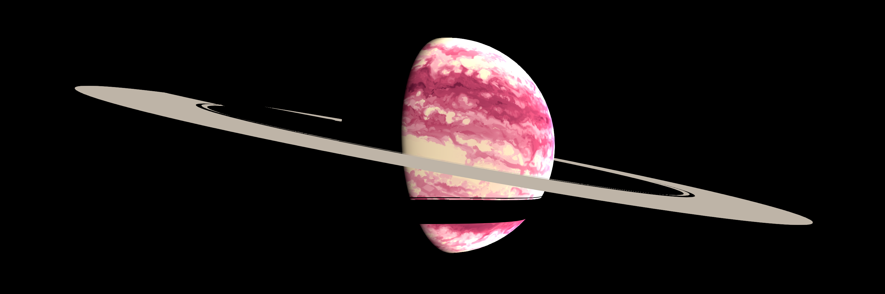

人造日本人
みかぶるのホームページ
2018-7-2開設 2019-5-19FC2からGitHubに移設
リンク集
Twitter
Twitter(サブ)
Mastodon
Unicodepod
かわいい文字をツイートする半手動botです
ツイキャス
Pixiv
Tumblr
ニコニコ静画
SoundCloud
趣味で作った曲
お題箱
Askfm
マシュマロ
Peing
Instagram
植物の写真とか
Blog
放置
小説
Eter9
TikTok
GitHub
自作言語の辞書
外部リンク
つぉりてぃあ
The World of Conlangs
amuhiku
人工言語のWeb辞書を作れるサービス